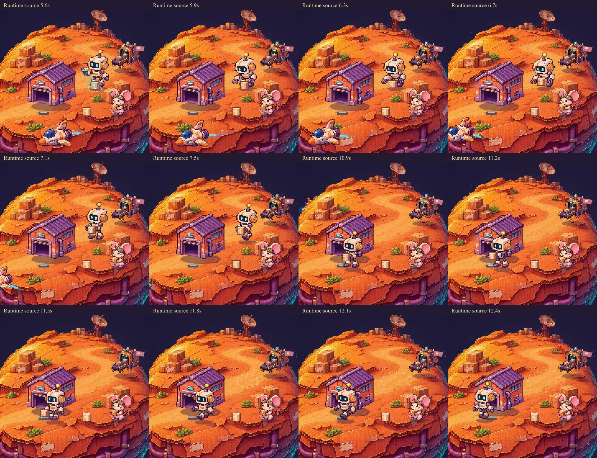
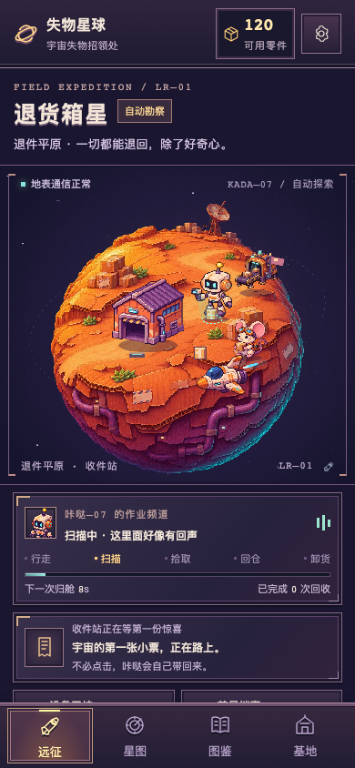
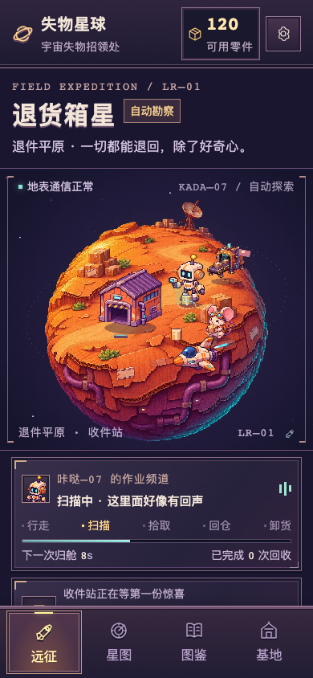
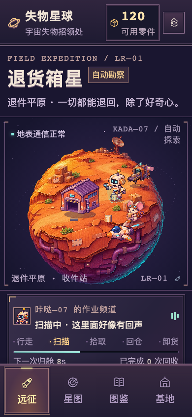
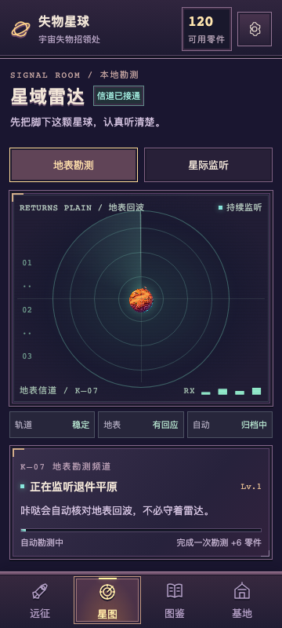
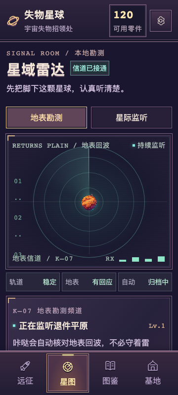
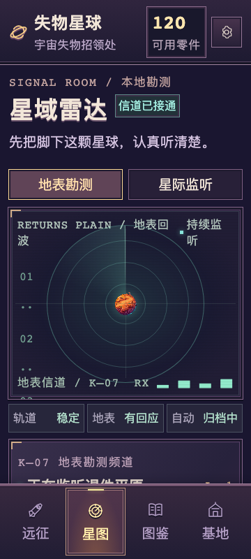
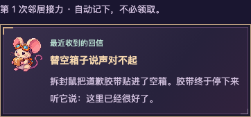

只修改首星，保留 Draft。冷首访、动作连续性、可读性与首轮之后的日常。
新浏览器上下文、无种存档、禁用缓存，CDP 180ms 延迟 / 96KB/s 下载。加载时保留完整占位，背景解码后整场显现；失败有说明与重试。首次默认基地，设置可选远征首页。
以下视频从当前 42 秒运行片段按原速度裁切，用最近邻放大 3 倍。主视频含完整 14 秒轨道和机器人循环；不拿冻结截图证明运动。

基础最小字号 11px，正文 13px；rem 跟随文字偏好。大字号为 125%，另用浏览器根字号 150% 模拟文字放大，检查无横向溢出和导航遮挡。不是物理手机系统设置测试。






15 分钟出现第一篇；20/30 分钟累计三篇；45/60 分钟累计五篇。之后每 50 次回收轮换邻居来访、纸箱换季和宇宙回执；八篇记录有界保存。无额外领奖，不打断发现、不扩张星球。
15/30/60 分钟规则模拟原始数据 · 已实现与候选节奏表

游戏默认静音；经明确点击开启和手势解锁后才播放。设置可保存，静音立即停止，后台不积累待播队列。下列 WAV 与实际游戏使用同一振荡器/包络代码离线渲染，录屏保持静音。
24 项规则/运动/存储测试，48 项浏览器流程；完整验收表与资源/性能实测。星际状态管线保留，当前频道待接通，不传递未发现目标列表。iOS Safari、低端 WebView、真实弱网、长时稳定性未测。方向中间角度和手臂逐帧细节仍可细磨，用户审核通过前不进入第二阶段。